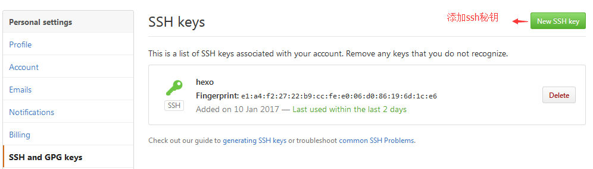
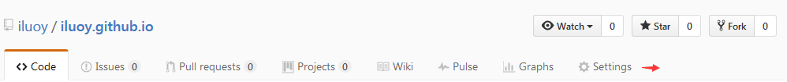
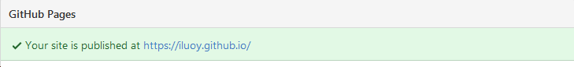

Github
注册
ssh秘钥
1.在linux主机上ssh-keygen -t rsa -C "your_email@youremail.com"(邮箱为注册github的邮箱)
2.cat ~/.ssh/id.rsa.pub(复制秘钥)
3.在github上点击setting--ssh and gpgkey，将复制的公钥粘贴进去

测试连接
ssh -T git@github.com
出现：Hi iluoy! You've successfully authenticated, but GitHub does not provide shell access.表示成功(奇怪的是我翻墙的时候不行，推送的时候翻墙也失败)
创建仓库(start a project)
仓库名字必须：your_user_name.github.io
仓库设置

GitHub Pages

Hexo安装及基本配置
条件
1.git
2.node.js
安装git
Centos: yum -y install git
安装node.js
1.wget -qO- https://raw.github.com/creationix/nvm/master/install.sh | sh
2.nvm install stable
配置淘宝镜像
1.npm install -gd express --registry=http://registry.npm.taobao.org
2.npm config set registry http://registry.npm.taobao.org
安装hexo
npm install -g hexo-cli
新建目录
mkdir /hexo
初始化此目录
hexo init /hexo
进入此目录
cd /hexo
执行
npm install
测试
hexo s ##使用ip:4000访问##
站点配置文件/hexo/_config.yml
# Hexo Configuration
## Docs: https://hexo.io/docs/configuration.html
## Source: https://github.com/hexojs/hexo/
# Site
title: iluoy ##网站标题
subtitle: 短剑虫蛀之日，岂是归来之时 ##网站副标题
description: 短剑虫蛀之日，岂是归来之时 ##网站描述
author: iluoy ##您的名字
language: zh-Hans ##网站使用的语言
timezone:Asia/Shanghai ##网站时区
# URL
## If your site is put in a subdirectory,
##set url as 'http://yoursite.com/child' and root as '/child/'
url: https://iluoy.github.io ##网址
root: / ##网站根目录
permalink: :year/:month/:day/:title/ ##文章的永久链接格式
permalink_defaults: ##永久链接中各部分的默认值
# Directory
source_dir: source ##资源文件夹，这个文件夹用来存放内容.
public_dir: public ##公共文件夹，这个文件夹用于存放生成的站点文件.
tag_dir: tags ##标签文件夹，需要hexo new page "tags"生成'.
archive_dir: archives ##归档文件夹.
category_dir: categories ##分类文件夹,需要hexo new page "categories"生成.
code_dir: downloads/code ##Include code 文件夹.
i18n_dir: :lang ##国际化（i18n）文件夹.
skip_render: ##跳过指定文件的渲染，您可使用glob表达式来匹配路径.
# Writing
new_post_name: :title.md ##新文章的文件名称.
default_layout: post ##预设布局.
titlecase: false ##把标题转换为 title case.
external_link: true ##在新标签中打开链接.
filename_case: 0 ##把文件名称转换为(1)小写或(2)大写.
render_drafts: false ##显示草稿.
post_asset_folder: true ##启动Asset文件夹.
relative_link: false ##把链接改为与根目录的相对位址.
future: true ##显示未来的文章.
highlight: ##代码块的设置.
enable: true
line_number: true
auto_detect: false
tab_replace:
# Category & Tag
default_category: uncategorized ##默认分类.
category_map: ##分类别名.
tag_map: ##标签别名.
# Date / Time format
## Hexo uses Moment.js to parse and display date
## You can customize the date format as defined in
## http://momentjs.com/docs/#/displaying/format/
date_format: YYYY-MM-DD ##日期格式.
time_format: HH:mm:ss ##时间格式.
# Pagination
## Set per_page to 0 to disable pagination
per_page: 5 ##每页显示的文章量 (0 = 关闭分页功能).
pagination_dir: page ##分页目录.
# Extensions
## Plugins: https://hexo.io/plugins/
## Themes: https://hexo.io/themes/
theme: next ##当前主题名称。值为false时禁用主题.
# Deployment
## Docs: https://hexo.io/docs/deployment.html
deploy: ##部署部分的设置,下面是部署到GitHub上面.
type: git
repo: git@github.com:iluoy/iluoy.github.io
编辑网站配置文件_config.yml
deploy:
type: git
repo: git@github.com:iluoy/iluoy.github.io
在/hexo目录下
hexo clean
rm db.json
hexo d -g
部署到github上面
报错：ERROR Deployer not found: git 或者 ERROR Deployer not found: github
解决：npm install hexo-deployer-git --save
主题Next
安装
1.cd /hexo
2.git clone https://github.com/iissnan/hexo-theme-next themes/next
3.修改站点配置文件_config.yml
language: zh-Hans ##语言不一样布局不一样
theme: next
创建分类
1.cd /hexo
2.hexo new page "categories"
3.编辑生成的文件index.md(文件在站点配置文件中定义的目录下面)，新增
type: "categories"
4.hexo new "文章名字"
5.在Front-matter中增加
categories:
- name
##表示此文章属于名字叫name的分类.
6.在Front-matter中修改title
title: 分类
创建标签
1.cd /hexo
2.hexo new page "tags"
3.编辑生成的文件index.md(文件在站点配置文件中定义的目录下面)，新增
type: "tags"
4.hexo new "文章名字"
5.在Front-matter中增加
tags:
- name
##表示此文章的标签为name
6.在Front-matter中修改title
title: 标签
创建about
1.cd /hexo
2.hexo new page "about"
3.编辑生成的文件index.md(文件在主题配置文件中定义的目录下面)，新增
type: "about"
4.编辑主题配置文件去掉about前面的注释
about: /about
5.编辑生成的文件index.md(文件在主题配置文件中定义的目录下面)，新增自定义个人信息
6.在Front-matter中修改title修改title.
title: 关于我
图片
本站图片
1.新建一篇文章
hexo new "name" ##会在/hexo/source/_posts下面生成name.md的文件和name文件夹
2.将图片放到name文件夹
win-->linux:使用rz命令或者ftp软件上传到服务器
3.在需要的地方使用图片

##这个路径是相对于生成的public文件夹中的此文章目录下的index.md文件的位置,使用hexo d -g
之后可以在public文件夹下面按日期找到对应的文章路径，如果生成的图片在别的位置,则要给出相
对于index.md的路径.##
文章折叠
Front-matter中
在Front-matter中添加
description： XXX
这种方式文章折叠在XXX的位置
博文中
在博文中想要折叠的地方增加
<!-- more -->
这种方式文章折叠在指定位置
参考:
4.GitBook